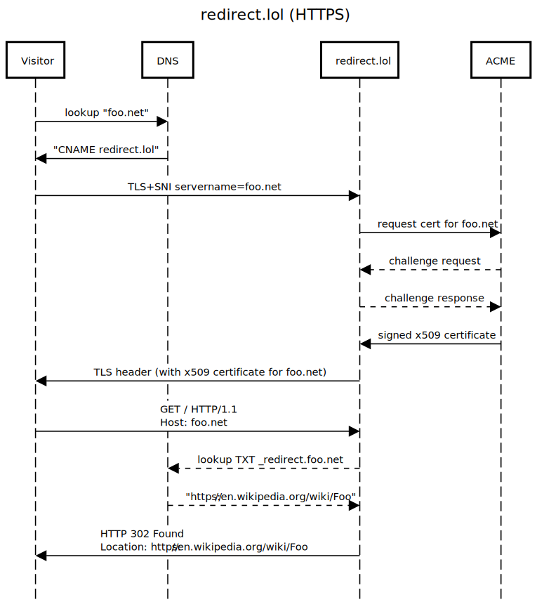

About redirect.lol
Create HTTP redirects using only DNS records.
Why?
Sometimes you have a domain or subdomain and you want visitors to get redirected somewhere else.
First-time webmasters often
assume
this is a simple matter of setting up some DNS records.
However, DNS doesn't have a "redirect" record type because DNS knows nothing about HTTP --
it operates at a lower level of the network stack!
How?
redirect.lol is a very simple webserver that only serves redirects.
When it receives a request, it performs a DNS lookup to decide where the visitor should be redirected.

What about SSL/TLS?
Using the on-demand TLS feature of
Caddy webserver it's possible for redirect.lol to serve HTTP redirects with a signed x509 certificate.
DNS:lookup foo.net
DNS->Visitor:CNAME redirect.lol
Visitor->redirect.lol:TLS+SNI servername=foo.net
redirect.lol->ACME:request cert for foo.net
ACME-->redirect.lol:challenge request
redirect.lol-->ACME:challenge response
ACME->redirect.lol:signed x509 certificate
redirect.lol->Visitor:TLS header (with x509 certificate for foo.net)
Visitor->redirect.lol:GET / HTTP/1.1\nHost: foo.net
redirect.lol-->DNS:lookup TXT _redirect.foo.net
DNS-->redirect.lol:https://en.wikipedia.org/wiki/Foo
redirect.lol->Visitor:HTTP 302 Found\nLocation: https://en.wikipedia.org/wiki/Foo
">
Troubleshooting
What happens if this DNS record is missing? Example: http://bad.redirect.lol
You'll see an error something like this:
To enable redirect, create a DNS TXT record at _redirect.bad.redirect.lol.
No response or failed TXT lookup for _redirect.bad.redirect.lol